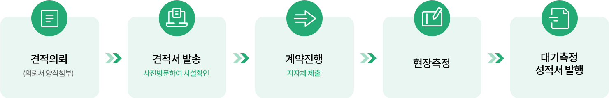
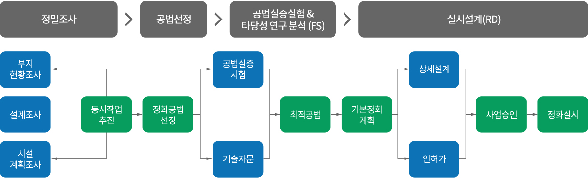

토양환경·자원순환 / 환경분석·컨설팅
측정·분석, 예산·설계, 실증시험·검증 지원을 연결해 현장에 필요한 정화계획 수립을 돕습니다.
법정 측정 주기 등 제도 사항은 최신 기준을 별도 확인합니다.
공식 자료

대기오염물질 측정대행과 시험·분석으로 배출시설과 방지시설의 관리를 지원합니다. 시험접수부터 측정결과 발행까지 관리하고 적정 관리대책과 기술지원을 병행합니다.
초기 예산 수립과 토양정화 전반의 상담에서 기본설계·실시설계로 이어집니다. 현장 여건과 시설 규모, 공법·기간·공사비 등을 검토해 설계안을 구체화합니다.
시료채취와 실험·실증시험으로 정화효율과 경제성을 검토합니다. 공정 적정성, 정화 품질과 재오염 여부 등을 고려한 정화검증 설계와 사후 관리를 지원합니다.